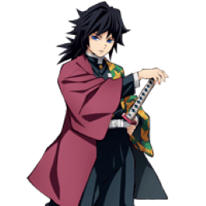

-
Rengoku
HP 456
Descrição
Kyojuro Rengoku pertence a uma família destinada ao mundo dos Hashiras, isso porque seu pai, Shinjuro Rengoku, já era um Hashira quando Kyojuro Rengoku nasceu. Nesse sentido, Shinjuro foi quem ensinou as técnicas das Chamas ao personagem, passando, de pai para filho, os ensinamentos de um Pilar das Chamas
-
Giyu
HP 416
Descrição
Giyu fugiu durante a jornada até lá e quase morreu na montanha, mas foi resgatado e tornou-se aprendiz de Sakonji Urokodaki. Giyu tinha 13 anos quando conheceu Sabito enquanto treinava com Sakonji, e eles se tornaram bons amigos devido ao seu passado e idade semelhantes
-
Shinobu
HP 389
Descrição
Shinobu se tornou uma usuária da Respiração do Inseto; por conta da baixa força física, especializou-se em técnicas com venenos, usando uma espada pouco convencional revestida por toxinas, que apenas perfurava os demônios, injetando-lhes as substâncias